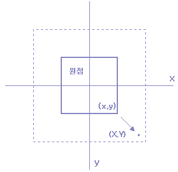
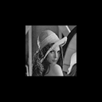
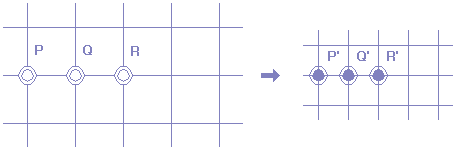
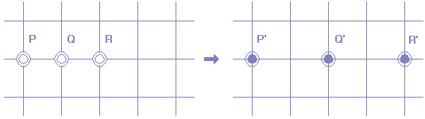
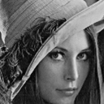
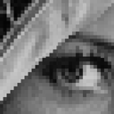
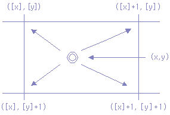
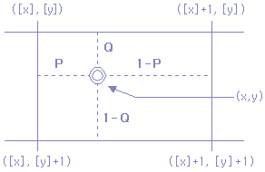
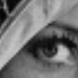

크기 변환(Size Operation)
이 장에서는 영상복원에 대한 기하학적인 변환을 소개한다.
기하학 변환은 일반적으로 영상에서 픽셀들 사이의 공간관계를 수정한다.
기학학 변환은 rubber-sheet transformation이라하는데
이는 고무종이위에 영상을 “ printing"처리하고 사전에 정의된 룰에 따라
이 종이를 stretching(늘임)으로써 보여질 수 있기 때문이다.
영상처리 항목에서 기하학적인 변환 두가지 기본 동작으로 구성한다.
(1) spatial transformation(공간 변환); 영상 평면상에서 픽셀들의 제배열을 정의
(2) gray-level interpolation; 공간적으로 변환된 영상에서 픽셀들에 대한 그레이 레벨의 할당을 다룸
Size Operation
기하학적 변환이란 영상 화소 위치의 변화를 의미한다.
기하학 변환에는 확재, 축소, 이동을 포함하여 각종 처리 기법이있는데 먼저 크기의 변환부터 살펴보자.
크기의 변환을 그림으로 그려 본다면 아래 [그림 1]과 같다.

[그림 1] 영상 데이터의 크기 변환
어떤 점 (x, y)가 확대, 축소되어 (X, Y)로 위치가 변하면,
두 좌표 사이에는 다음과 같은 관계가 성립한다.
X = ax Y = by [식 G-1]
위 [식 G-1]에서 a, b는 각각 x방향, y방향의 확대율이다. 이 수식을 이용하여 영상을 처리한다면,
a, b가 1보다 큰 값을 가지는 경우, 영상 데이터는 확대가 되고,
1보다 작을 때에는 축소가 된 출력 데이터를 얻을 수 있다.
이 수식에 의해 우리는 모든 화소점(x, y)에 대해서 이 연산을 행하고,
출력 영상의 점(X, Y)의 농도값에 입력 영상의 점(x, y)의 농도값을 쓰면,
영상의 확대, 축소를 할 수 있다.
프로그램으로 살펴보면 다음과 같다.
¡ 입력 영상의 좌표에 근거하여 출력영상의 좌표에 mapping하는 함수
/* function for mapping data pixel according
to input image data***/
void ScaleInputToOutput(float zx, float zy){
int i, j, y_bnd, x_bnd;
int xs=SIZE/2;
int ys=SIZE/2;
for(i = 0; i< SIZE; i++) {
for(j = 0; j < SIZE; j++) {
image_out[i][j]=LOW;
/* -LEVEL/2에서 LEVEL/2사이의 값을 x_bnd,
y_bnd가 가지는 경우 mapping */
for (i=-ys; i< ys; i++) {
for (j=-xs; j< xs; j++ {
y_bnd=zy*i; /* 증폭도 만큼 곱한다 */
x_bnd=zx*j;
if (y_bnd>=-ys) && (y_bnd < ys) && (x_bnd > =-xs) && (x_bnd< xs))
image_out[y_bnd+ys][x_bnd+xs]=image_in[i+ys][j+xs];
} }}
여기서, 영상 배열 image_in과 image_out의 크기는 가로 SIZE, 세로 SIZE 화소이기 때문에,
첨자 x, y의 범위는 -LEVEL/2< x < LEVEL/2, -LEVEL/2 < y < LEVEL/2가 된다.
그러나 x, y에 음수는 허락되지 않기 때문에 좌표 (x, y)에 access할 때에는 (LEVEL/2, LEVEL)만 바이어스(bias)를 걸고,
image_in[y+LEVEL/2] [x+LEVEL/2]과 image_in[y+LEVEL/2] [x+LEVE L/2]와 같이 access할 수 있도록 한다.
또, [식 G-1]의 계산 결과 x, y가 영상 배열의 범위를 넘어가는 것을 방지하기 위하여, 범위 check를 하고 있다.
이 프로그램을 사용하여,
2배로 확대한 예(a=b=2)와 1/2로 축소한 예(a=b=1/2)를 보면 다음 [그림 2]와 같다.

(a) a=b=1/2 (b) a=b=2
[그림 2] 프로그램 결과 영상
결과 영상을 살펴보면 1/2 축소는 좋지만, 2배 확대하면 조금 영상이 변한다.
이것을 이해하기 위해, 다음 [그림 3]을 살펴 보자.


(a) 1/2로 축소 (b) 2배 확대
[그림 3] 축소, 확대에 의한 각 화소의 위치 비교
위의 [그림 3]에서 보면, 입력 영상의 화소 P가 출력 영상의 화소 P'에 대응(mapping)된다.
그리고, 입력 영상 P의 인근에 있는 점 Q, R이 출력 영상에 각각 Q', R'로 대응되면,
Q', R'는 확대율에 의하여, P'의 주변에 위치하고 있다. 확대율을 1/2로 한다면,
[그림 3] (a)와 같이 Q', R'이 P와 연결 성분으로 된다는 것을 알 수 있다.
그러나, 2배 확대할 경우에는 출력 영상의 한 화소 P'점의 인접 화소에는 해당되는 데이터가 없기 때문에,
출력 영상 데이터에도 화소가 띄엄띄엄 있게 된다. 따라서, 이를 피하기 위해 '입력 영상을 기준으로 한
출력 영상의 매핑(mapping) 방법'을 사용하지 않고, 출력 영상을 기준으로 해서,
출력 영상의 화소가 입력 영상의 어떤 화소에 대응관계를 이용하는 것이 더 나은 결과를 얻을 수 있다는
것을 알 수 있다.
이 과정을 수행하기 위해, [식 G-1]의 역변환을 생각해 보자. [식 G-1]의 역변환은 다음과 같다.
x = X / a y = Y / b [식 G-2]
출력 영상의 모든 화소(X, Y)에 대하여 [식 G-2]를 계산하고,
대응하는 입력영상을 구해 이 화소의 농도값을 쓰면, 위에서 언급한 현상은 일어나지 않을 것이다.
이와 같은 방법으로 확대, 축소를 하는 프로그램을 살펴보면 다음과 같다.
¡ 최근접법(좌표를 mapping하는 역함수를 취하고 계산값을 반올림)
/** function to find pixel allocation and
compute data value by round-off*/
void ScaleOutputToInput(float zx, float zy){
int i, j, y_bnd, x_bnd=0;
int ys=SIZE/2; float x, y, p, q;
int ys=SIZE/2; int d;
for(i = 0; i < SIZE; i++) {
for(j = 0; j < SIZE; j++) {
image_out[i][j]=LOW;
for (i=-ys; i< ys; i++) {
for (j=-xs; j< xs; j++ { /* 역함수를 취하고, 반올림을 한다.*/
if (i>0) y_bnd=i/zy+0.5; else y_bnd=i/zy-0.5;
if (j> 0) x_bnd=j/zx+0.5; else x_bnd=j/zx-0.5;
/* -LEVEL/2 에서 LEVEL/2사이의 값을 x_bnd,
y_bnd가 가지는 경우 mapping */
if ((y_bnd> -ys) && (y_bnd < ys) && (x_bnd >= -xs) && (x_bnd< xs))
image_out[i+ys][j+xs]=image_in[y_bnd+ys][x_bnd+xs];
else
image_out[i+ys][j+xs]=0];
} }}
역 변환 방식에 의한 1/2 축소와 2배 확대를 한 결과는 다음과 같다.
 
(a) a=b=1/2 (b) a=b=2 (c) 중심확대 영상
[그림 4] 역변환에 의한 결과 영상
위의 결과는 앞서서 설명한 방식보다 더 좋은 결과임을 확인할 수 있다.
이 방법을 사사오입이라 부르며 개요는 다음과 같다.

[그림 5] 화소값 구하는 방법
위에서 언급한 [식 G-2]의 계산은, 일반적으로 실수연산을 행할 필요가 있기 때문에 좌표 x, y는 소수부를 포함 한다.
그러나 입력 영상의 화소의 위치(address)는 반드시 정수이어야 하므로 address 계산에 있어서는,
어떤 형태로서 정수화할 필요가 있다.
이것을 영상에서 생각하면, [그림 5]와 같이 좌표(x, y)에 가장 근접한 격자점을 선택하는 것이다.
그러므로, 사사오입법을 최근접법이라고 부르기도 한다.
이 방법은 [그림 4](c)의 확대 사진에서도 알 수 있듯이 모자이크 형태가 된다.
이 현상은 확대율을 크게하면 두드러 진다.
그래서 화질을 좋게하기 위해 선형 보간법이라 불리우는 방법을 이용하는데,
이 방법은 아래의 [그림 6]에서 처럼, 구한 assdress가 격자점에 일치하지 않는 경우
근접의 4개의 격자점으로 부터의 거리의 비를 구하고,
이 비율로서 근접 화소의 농도값으로부터 보간하는 것이다.
그림으로 살펴보면 다음과 같다.

[그림 6] 선형 보간법에 의한 화소값 추정
이 농도값의 계산 식을 나타내면, 다음과 같다.
d(x,y)=(1-q){1-p)d([x],[y])+pd([x],[y])}+q{1-p)d([x],[y]+1)+pd([x]+1,[y]+1)} [식 G-3]
여기에서 d(x, y)는 좌표 (x, y)에 있어서 농도값을 나타낸다.
[x], [y]는 각각 x, y를 넘지 않는 정수를 나타낸다.
확대하는 경우에도 모자이크의 형태가 되지 않고 평활한 형태가 된다.
프로그램 은 다음과 같다.
¡ 선형 보간법
/**** function for linear compansation method **/
void ScaleLinear(float zx,float zy){
int I, j, buf1, buf2;
float x, y, p, q;
int xs = SIZE/2;
int ys = SIZE/2;
int data;
for(i = 0; i < SIZE; I++)
for(j = 0; j < SIZE; j++)
image_out[i][j] = LOW;
for(i = -ys; i < ys; i++) {
for(j = -xs; j < xs; j++) {
y = I/zy;
x = j/zx;
if(y > 0) buf1 = y; else buf1 = y-1;
if(x > 0) buf2 = x; else buf2 = x-1;
q = y - buf1;
p = x - buf2;
if((buf1 > -ys) && ( buf1 < ys) &&
( buf2 >= -xs) && ( buf2 < xs))
data = (1.0-q)*((1.0-p)*image_in[buf1 + ys][buf2 + xs]
+ p*image_in[buf1+ys][buf2+1+xs])
+ q*((1.0-p)*image_in[buf1+1+ys][buf2+xs]
+ p*image_in[buf1+1+ys][buf2+1+xs]);
else
data = 0;
if(data < 0) data = 0;
if(data > 255) data = 255;
image_out[i+ys][j+xs] = data;
} }}
프로그램을 실행 시켰을 때의 결과 영상은 아래 [그림 7]과 같다.

(a) a=b=1/2 (b) a=b=2 (c) 중심확대 영상
[그림 7] 선형 보간법에 의한 결과 영상